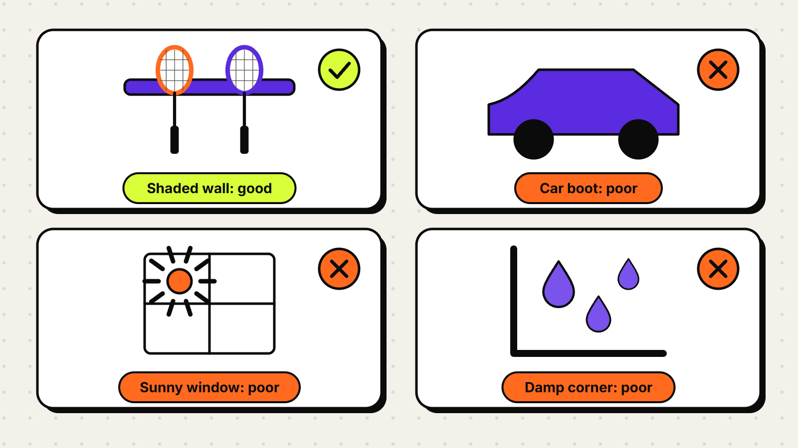
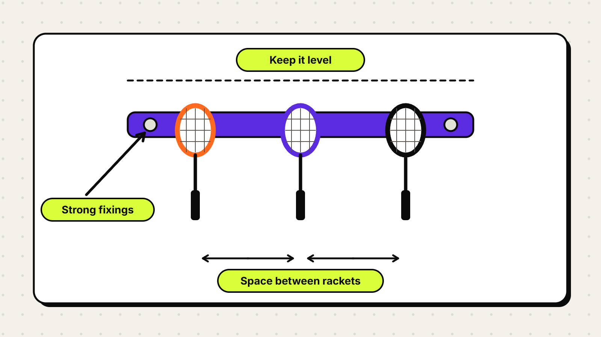

Rackets often end up leaning in a corner, buried in a bag, or stacked on a chair. That is hard on strings, frames, and grips, and it takes up space. A simple storage plan keeps them ready to play. This guide covers where to keep rackets, how to hang them, and what to check on a wall mount.

Pick a cool, dry, shaded place away from steam and direct sun. Keep it out of the path of doors. Children should be able to reach their own rackets without pulling others down.
| Method | Good for | Watch out for |
|---|---|---|
| Padded bag | Travel and protection | Trapped moisture after play |
| Wall mount | Visible, ready, and off the floor | Fixing strength |
| Floor stand | Rented rooms with no drilling | Tipping if lightly built |
| Shelf | One or two rackets lying flat | Things piled on top |

Each racket is light, but a full mount adds up, and bags hung on it add much more. Use the mount for rackets, not as a coat hook. Check fixings every few months, and remove it if cracks appear. Place it where a falling racket cannot hit a person sleeping or sitting below.
Badminton rackets are long and light with small heads. Tennis rackets are larger and heavier. Padel rackets are solid, thick, and usually carry a wrist cord. A mount designed for one may not hold another, so check the slot width and the maker's description.
Our range includes wall mounts for badminton and padel, from small holders to a mount for sixteen rackets. See sports holders. For tennis, squash, or an unusual collection, send measurements with a custom request.
Label each slot with a name or number, which helps with returns and makes missing rackets obvious. Mount at heights that suit the youngest players, and have an adult check the fixings regularly.
Tip: Hang the racket you use most in the easiest slot. You are more likely to put it back.
Rackets are only part of the equipment. Shuttles keep their shape best upright in their tube, away from heat. Balls belong in a ventilated tub. Shoes should dry before they go into a cupboard. A shelf or two beside the mount keeps everything for a game in one place, so leaving the house takes less searching. Plan that corner as a whole, then choose the holder size to match. If the wall is narrow, a vertical arrangement may fit better than a wide one, and a custom spacing can suit rackets of mixed sports on one panel.
Take a photo of the wall with a tape measure across it when you ask for a custom holder. Width, nearby switches, and door swings show up at once.
Either can work if the support is smooth and wide enough and does not press on the strings. Follow the mount's design, and avoid anything with sharp edges against the frame.
A cover protects from dust, but let a damp racket and grip dry first. Check that a covered head still fits the slot.
Rain, sun, and humidity are hard on rackets themselves, so indoor storage is better. If a mount must be outside, it needs a weather-resistant material and the rackets still suffer.
It depends on whether the wall is brick, concrete, or board. A hardware shop or fitter can recommend plugs and screws for the weight. Do not rely on small nails.
Ask the owner before drilling. A floor stand or an over-door arrangement avoids holes, as long as it is stable and does not snag the door.
If friends often borrow equipment, keep spare rackets in the lowest slots and the best ones higher. Make sure no head sticks out at face height beside a walkway. A short house rule, such as returning each racket to its own slot after play, does more for tidiness than any particular holder.
For material advice on holders that take daily use, read the filament guide, and see how walls affect strength.